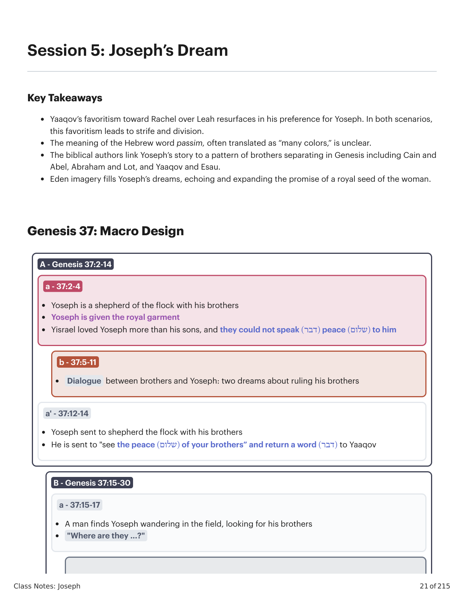
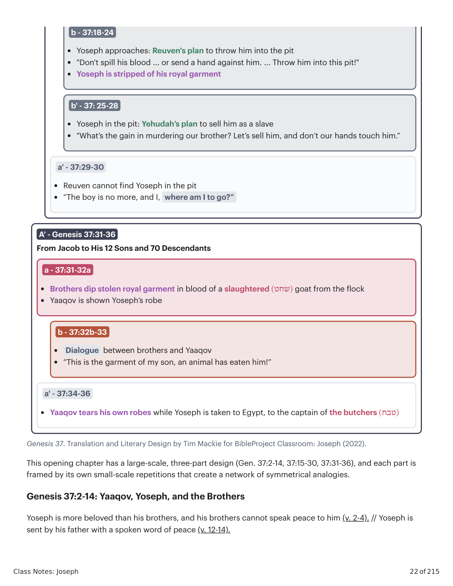
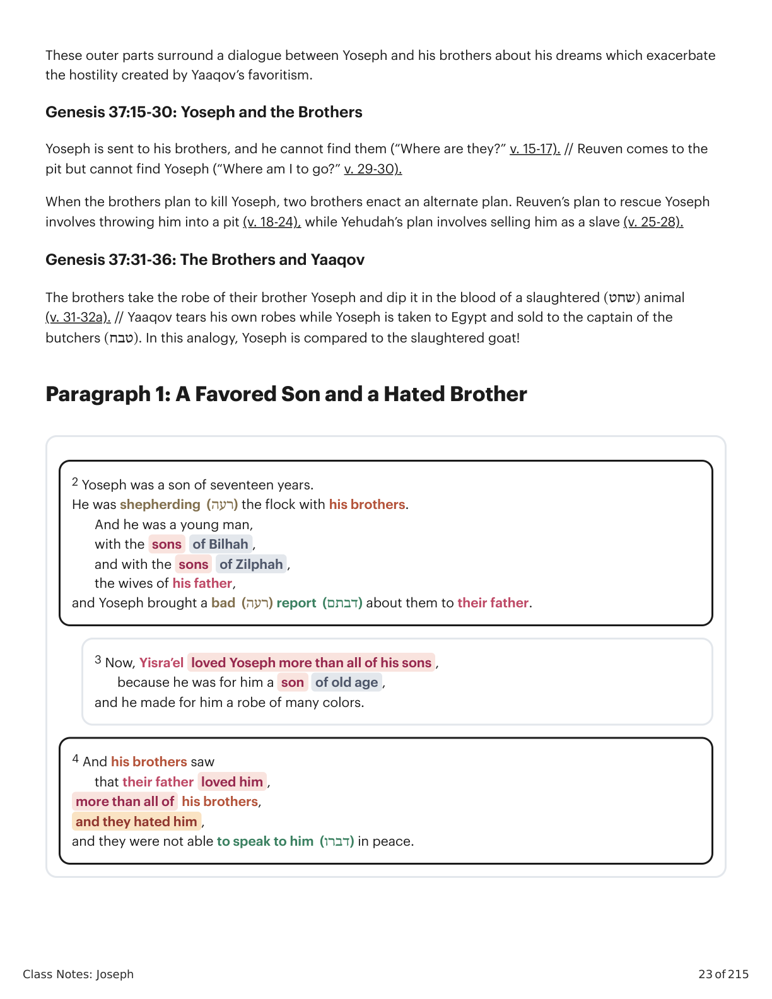
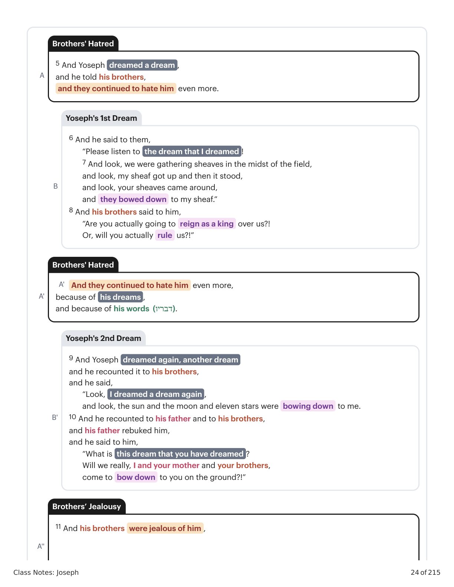
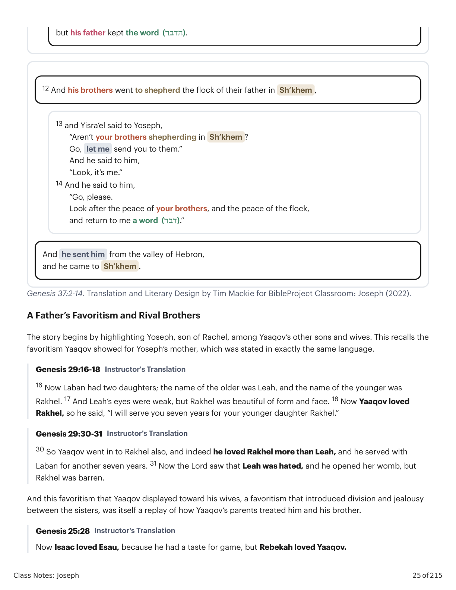
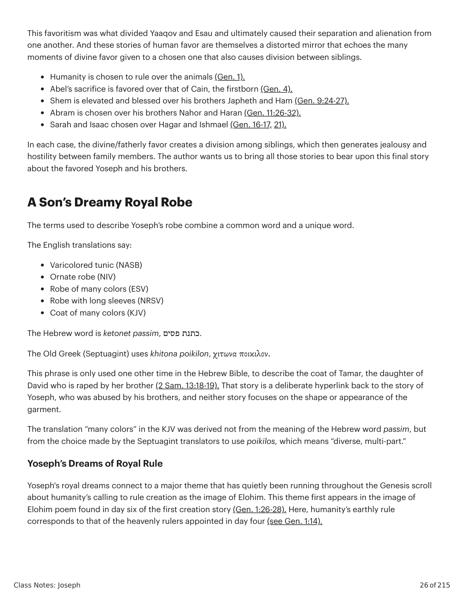
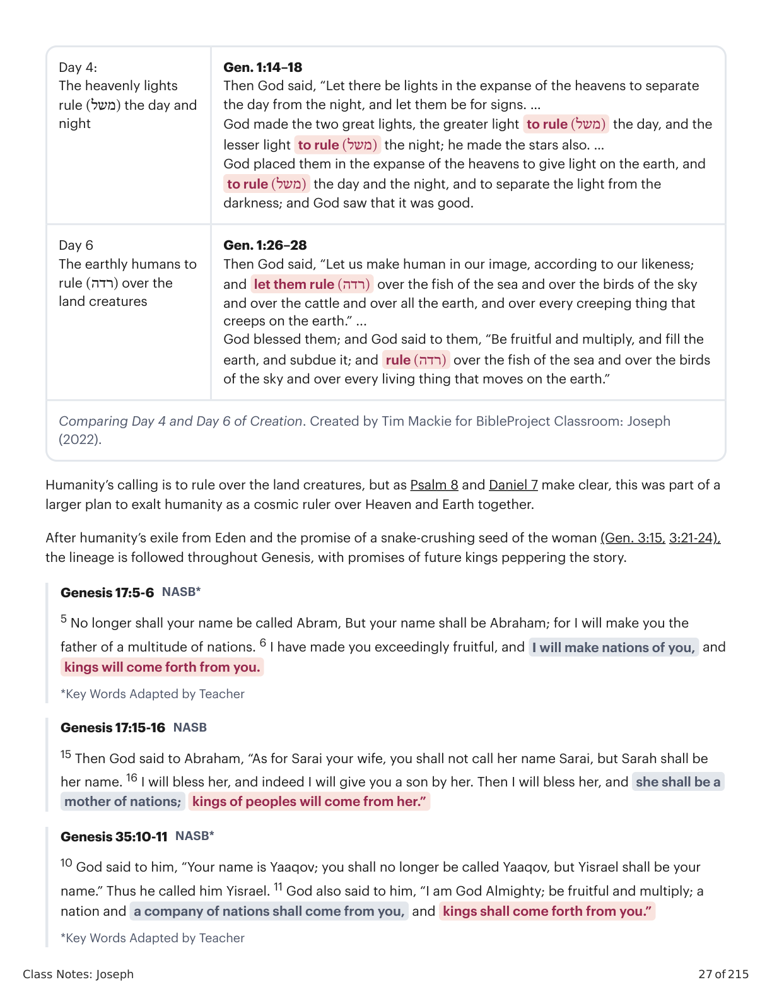

Sessão 5: O Sonho de JoséSession 5: Joseph\'s Dream
Class Notes: Joseph
21 of 215
Session 5: Joseph’s Dream
Key Takeaways
Yaaqov’s favoritism toward Rachel over Leah resurfaces in his preference for Yoseph. In both scenarios,
this favoritism leads to strife and division.
The meaning of the Hebrew word passim, often translated as “many colors,” is unclear.
The biblical authors link Yoseph’s story to a pattern of brothers separating in Genesis including Cain and
Abel, Abraham and Lot, and Yaaqov and Esau.
Eden imagery fills Yoseph’s dreams, echoing and expanding the promise of a royal seed of the woman.
Genesis 37: Macro Design
A - Genesis 37:2-14
a - 37:2-4
Yoseph is a shepherd of the flock with his brothers
Yoseph is given the royal garment
Yisrael loved Yoseph more than his sons, and they could not speak )(דבר peace )(שלום to him
b - 37:5-11
Dialogue between brothers and Yoseph: two dreams about ruling his brothers
a' - 37:12-14
Yoseph sent to shepherd the flock with his brothers
He is sent to "see the peace )(שלום of your brothers” and return a word )(דבר to Yaaqov
B - Genesis 37:15-30
a - 37:15-17
A man finds Yoseph wandering in the field, looking for his brothers
"Where are they ...?"

Gênesis X:Y. Tradução e Design Literário por Tim Mackie para BibleProject Classroom: José (2021).Genesis X:Y. Translation and Literary Design by Tim Mackie for BibleProject Classroom: Joseph (2021).
Class Notes: Joseph
22 of 215
Genesis 37. Translation and Literary Design by Tim Mackie for BibleProject Classroom: Joseph (2022).
This opening chapter has a large-scale, three-part design (Gen. 37:2-14, 37:15-30, 37:31-36), and each part is
framed by its own small-scale repetitions that create a network of symmetrical analogies.
Genesis 37:2-14: Yaaqov, Yoseph, and the Brothers
Yoseph is more beloved than his brothers, and his brothers cannot speak peace to him (v. 2-4). // Yoseph is
sent by his father with a spoken word of peace (v. 12-14).
b - 37:18-24
Yoseph approaches: Reuven's plan to throw him into the pit
"Don't spill his blood ... or send a hand against him. ... Throw him into this pit!"
Yoseph is stripped of his royal garment
b' - 37: 25-28
Yoseph in the pit: Yehudah’s plan to sell him as a slave
"What’s the gain in murdering our brother? Let’s sell him, and don’t our hands touch him.”
a' - 37:29-30
Reuven cannot find Yoseph in the pit
“The boy is no more, and I, where am I to go?”
A' - Genesis 37:31-36
From Jacob to His 12 Sons and 70 Descendants
a - 37:31-32a
Brothers dip stolen royal garment in blood of a slaughtered )(שחט goat from the flock
Yaaqov is shown Yoseph’s robe
b - 37:32b-33
Dialogue between brothers and Yaaqov
“This is the garment of my son, an animal has eaten him!”
a' - 37:34-36
Yaaqov tears his own robes while Yoseph is taken to Egypt, to the captain of the butchers )(טבח

Gênesis X:Y. Tradução e Design Literário por Tim Mackie para BibleProject Classroom: José (2021).Genesis X:Y. Translation and Literary Design by Tim Mackie for BibleProject Classroom: Joseph (2021).
Class Notes: Joseph
23 of 215
These outer parts surround a dialogue between Yoseph and his brothers about his dreams which exacerbate
the hostility created by Yaaqov’s favoritism.
Genesis 37:15-30: Yoseph and the Brothers
Yoseph is sent to his brothers, and he cannot find them (“Where are they?” v. 15-17). // Reuven comes to the
pit but cannot find Yoseph (“Where am I to go?” v. 29-30).
When the brothers plan to kill Yoseph, two brothers enact an alternate plan. Reuven’s plan to rescue Yoseph
involves throwing him into a pit (v. 18-24), while Yehudah’s plan involves selling him as a slave (v. 25-28).
Genesis 37:31-36: The Brothers and Yaaqov
The brothers take the robe of their brother Yoseph and dip it in the blood of a slaughtered )(שחט animal
(v. 31-32a). // Yaaqov tears his own robes while Yoseph is taken to Egypt and sold to the captain of the
butchers )(טבח. In this analogy, Yoseph is compared to the slaughtered goat!
Paragraph 1: A Favored Son and a Hated Brother
2 Yoseph was a son of seventeen years.
He was shepherding (רעה) the flock with his brothers.
And he was a young man,
with the sons
of Bilhah ,
and with the sons
of Zilphah ,
the wives of his father,
and Yoseph brought a bad (רעה) report (דבתם) about them to their father.
3 Now, Yisra’el loved Yoseph more than all of his sons ,
because he was for him a son
of old age ,
and he made for him a robe of many colors.
4 And his brothers saw
that their father loved him ,
more than all of his brothers,
and they hated him ,
and they were not able to speak to him (דברו) in peace.

Gênesis X:Y. Tradução e Design Literário por Tim Mackie para BibleProject Classroom: José (2021).Genesis X:Y. Translation and Literary Design by Tim Mackie for BibleProject Classroom: Joseph (2021).
Class Notes: Joseph
24 of 215
A
5 And Yoseph dreamed a dream ,
and he told his brothers,
and they continued to hate him even more.
B
6 And he said to them,
“Please listen to the dream that I dreamed !
7 And look, we were gathering sheaves in the midst of the field,
and look, my sheaf got up and then it stood,
and look, your sheaves came around,
and they bowed down to my sheaf.”
8 And his brothers said to him,
“Are you actually going to reign as a king over us?!
Or, will you actually rule us?!”
A'
And they continued to hate him even more,
A'
because of his dreams ,
and because of his words (דבריו).
B'
9 And Yoseph dreamed again, another dream
and he recounted it to his brothers,
and he said,
“Look, I dreamed a dream again ,
and look, the sun and the moon and eleven stars were bowing down to me.
10 And he recounted to his father and to his brothers,
and his father rebuked him,
and he said to him,
“What is this dream that you have dreamed ?
Will we really, I and your mother and your brothers,
come to bow down to you on the ground?!”
A''
11 And his brothers were jealous of him ,
Brothers' Hatred
Yoseph's 1st Dream
Brothers' Hatred
Yoseph's 2nd Dream
Brothers’ Jealousy

Gênesis X:Y. Tradução e Design Literário por Tim Mackie para BibleProject Classroom: José (2021).Genesis X:Y. Translation and Literary Design by Tim Mackie for BibleProject Classroom: Joseph (2021).
Class Notes: Joseph
25 of 215
Genesis 37:2-14. Translation and Literary Design by Tim Mackie for BibleProject Classroom: Joseph (2022).
A Father’s Favoritism and Rival Brothers
The story begins by highlighting Yoseph, son of Rachel, among Yaaqov’s other sons and wives. This recalls the
favoritism Yaaqov showed for Yoseph’s mother, which was stated in exactly the same language.
Genesis 29:16-18 Instructor's Translation
16 Now Laban had two daughters; the name of the older was Leah, and the name of the younger was
Rakhel. 17 And Leah’s eyes were weak, but Rakhel was beautiful of form and face. 18 Now Yaaqov loved
Rakhel, so he said, “I will serve you seven years for your younger daughter Rakhel.”
Genesis 29:30-31 Instructor's Translation
30 So Yaaqov went in to Rakhel also, and indeed he loved Rakhel more than Leah, and he served with
Laban for another seven years. 31 Now the Lord saw that Leah was hated, and he opened her womb, but
Rakhel was barren.
And this favoritism that Yaaqov displayed toward his wives, a favoritism that introduced division and jealousy
between the sisters, was itself a replay of how Yaaqov’s parents treated him and his brother.
Genesis 25:28 Instructor's Translation
Now Isaac loved Esau, because he had a taste for game, but Rebekah loved Yaaqov.
but his father kept the word (הדבר).
12 And his brothers went to shepherd the flock of their father in Sh’khem ,
13 and Yisra’el said to Yoseph,
“Aren’t your brothers shepherding in Sh’khem ?
Go, let me send you to them.”
And he said to him,
“Look, it’s me.”
14 And he said to him,
“Go, please.
Look after the peace of your brothers, and the peace of the flock,
and return to me a word (דבר).”
And he sent him from the valley of Hebron,
and he came to Sh’khem .

Gênesis X:Y. Tradução e Design Literário por Tim Mackie para BibleProject Classroom: José (2021).Genesis X:Y. Translation and Literary Design by Tim Mackie for BibleProject Classroom: Joseph (2021).
Class Notes: Joseph
26 of 215
This favoritism was what divided Yaaqov and Esau and ultimately caused their separation and alienation from
one another. And these stories of human favor are themselves a distorted mirror that echoes the many
moments of divine favor given to a chosen one that also causes division between siblings.
Humanity is chosen to rule over the animals (Gen. 1).
Abel’s sacrifice is favored over that of Cain, the firstborn (Gen. 4).
Shem is elevated and blessed over his brothers Japheth and Ham (Gen. 9:24-27).
Abram is chosen over his brothers Nahor and Haran (Gen. 11:26-32).
Sarah and Isaac chosen over Hagar and Ishmael (Gen. 16-17, 21).
In each case, the divine/fatherly favor creates a division among siblings, which then generates jealousy and
hostility between family members. The author wants us to bring all those stories to bear upon this final story
about the favored Yoseph and his brothers.
A Son’s Dreamy Royal Robe
The terms used to describe Yoseph’s robe combine a common word and a unique word.
The English translations say:
Varicolored tunic (NASB)
Ornate robe (NIV)
Robe of many colors (ESV)
Robe with long sleeves (NRSV)
Coat of many colors (KJV)
The Hebrew word is ketonet passim, כתנת פסים.
The Old Greek (Septuagint) uses khitona poikilon, χιτωνα ποικιλον.
This phrase is only used one other time in the Hebrew Bible, to describe the coat of Tamar, the daughter of
David who is raped by her brother (2 Sam. 13:18-19). That story is a deliberate hyperlink back to the story of
Yoseph, who was abused by his brothers, and neither story focuses on the shape or appearance of the
garment.
The translation “many colors” in the KJV was derived not from the meaning of the Hebrew word passim, but
from the choice made by the Septuagint translators to use poikilos, which means “diverse, multi-part.”
Yoseph’s Dreams of Royal Rule
Yoseph's royal dreams connect to a major theme that has quietly been running throughout the Genesis scroll
about humanity’s calling to rule creation as the image of Elohim. This theme first appears in the image of
Elohim poem found in day six of the first creation story (Gen. 1:26-28). Here, humanity’s earthly rule
corresponds to that of the heavenly rulers appointed in day four (see Gen. 1:14).

Gênesis X:Y. Tradução e Design Literário por Tim Mackie para BibleProject Classroom: José (2021).Genesis X:Y. Translation and Literary Design by Tim Mackie for BibleProject Classroom: Joseph (2021).
Class Notes: Joseph
27 of 215
Day 4:
The heavenly lights
rule )(משל the day and
night
Gen. 1:14–18
Then God said, “Let there be lights in the expanse of the heavens to separate
the day from the night, and let them be for signs. …
God made the two great lights, the greater light to rule )(משל the day, and the
lesser light to rule )(משל the night; he made the stars also. …
God placed them in the expanse of the heavens to give light on the earth, and
to rule )(משל the day and the night, and to separate the light from the
darkness; and God saw that it was good.
Day 6
The earthly humans to
rule )(רדה over the
land creatures
Gen. 1:26–28
Then God said, “Let us make human in our image, according to our likeness;
and let them rule )(רדה over the fish of the sea and over the birds of the sky
and over the cattle and over all the earth, and over every creeping thing that
creeps on the earth.” ...
God blessed them; and God said to them, “Be fruitful and multiply, and fill the
earth, and subdue it; and rule )(רדה over the fish of the sea and over the birds
of the sky and over every living thing that moves on the earth.”
Comparing Day 4 and Day 6 of Creation. Created by Tim Mackie for BibleProject Classroom: Joseph
(2022).
Humanity’s calling is to rule over the land creatures, but as Psalm 8 and Daniel 7 make clear, this was part of a
larger plan to exalt humanity as a cosmic ruler over Heaven and Earth together.
After humanity’s exile from Eden and the promise of a snake-crushing seed of the woman (Gen. 3:15, 3:21-24),
the lineage is followed throughout Genesis, with promises of future kings peppering the story.
Genesis 17:5-6 NASB*
5 No longer shall your name be called Abram, But your name shall be Abraham; for I will make you the
father of a multitude of nations. 6 I have made you exceedingly fruitful, and I will make nations of you, and
kings will come forth from you.
*Key Words Adapted by Teacher
Genesis 17:15-16 NASB
15 Then God said to Abraham, “As for Sarai your wife, you shall not call her name Sarai, but Sarah shall be
her name. 16 I will bless her, and indeed I will give you a son by her. Then I will bless her, and she shall be a
mother of nations;
kings of peoples will come from her.”
Genesis 35:10-11 NASB*
10 God said to him, “Your name is Yaaqov; you shall no longer be called Yaaqov, but Yisrael shall be your
name.” Thus he called him Yisrael. 11 God also said to him, “I am God Almighty; be fruitful and multiply; a
nation and a company of nations shall come from you, and kings shall come forth from you.”
*Key Words Adapted by Teacher

Gênesis X:Y. Tradução e Design Literário por Tim Mackie para BibleProject Classroom: José (2021).Genesis X:Y. Translation and Literary Design by Tim Mackie for BibleProject Classroom: Joseph (2021).
Class Notes: Joseph
28 of 215
And so, as we begin the Yoseph story, we wonder if this ancient promise of a royal seed will be fulfilled
through this favored son. It turns out that this theme will get a bit more complicated, as both Yoseph and
Yehudah will participate in this promise.
Reflection Question
What literary clues, linked to earlier stories in Genesis, do the biblical authors use to set the stage for the
coming conflict in Yoseph’s story?